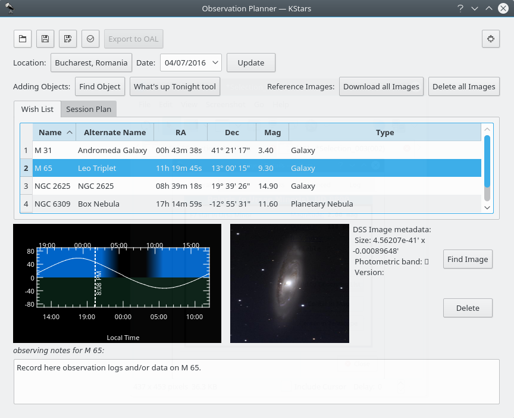
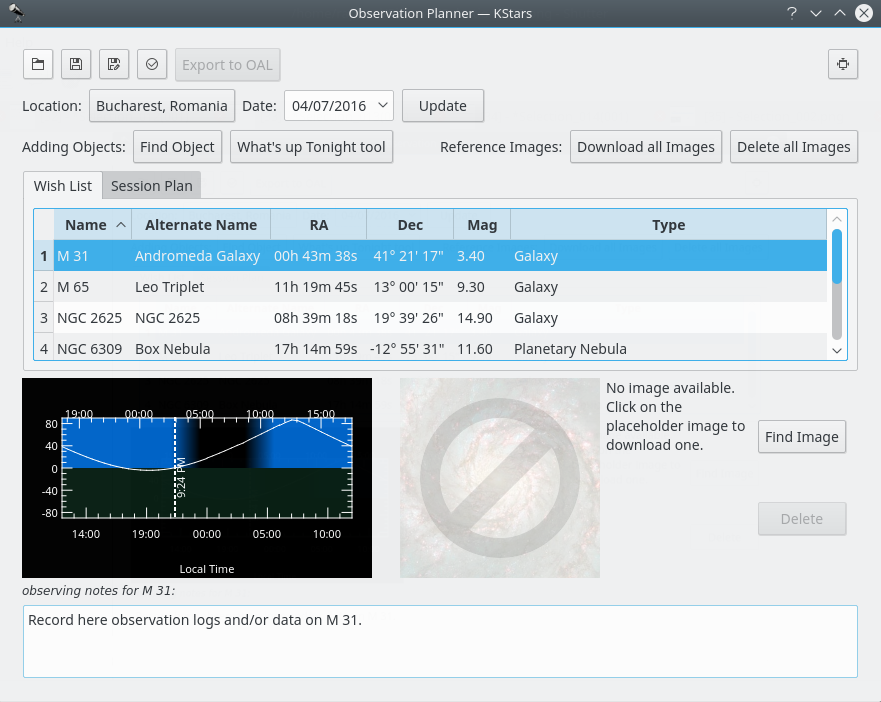
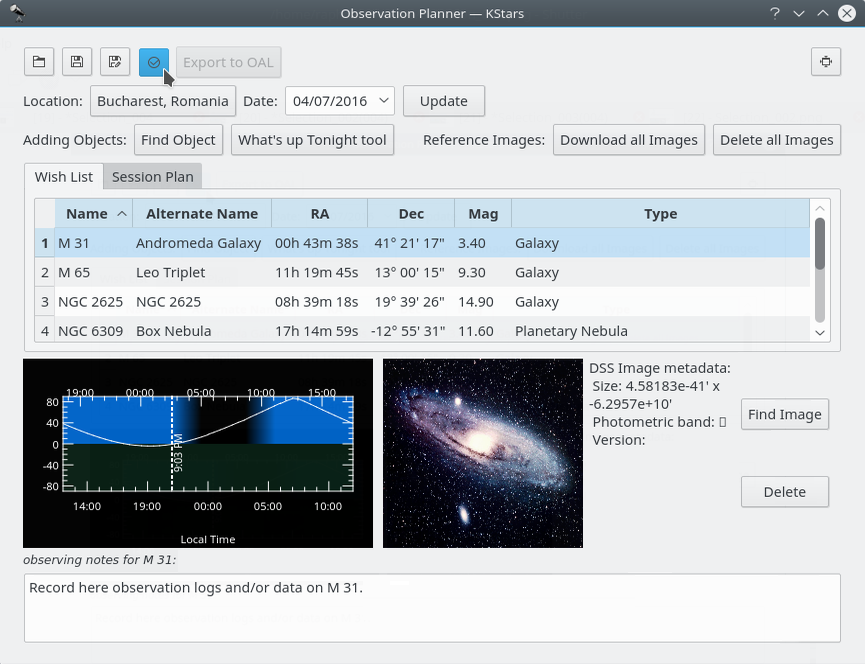
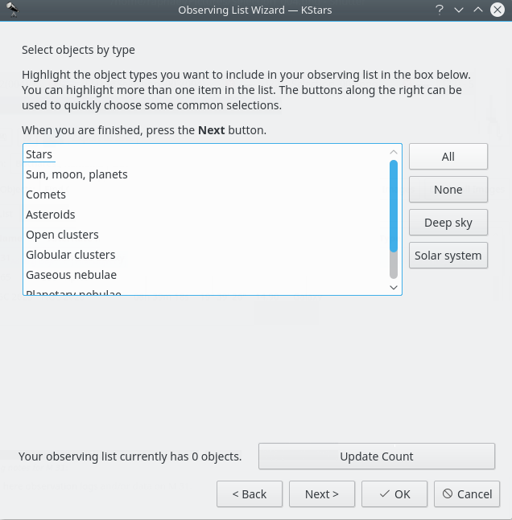
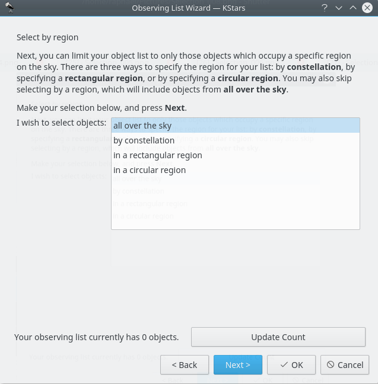
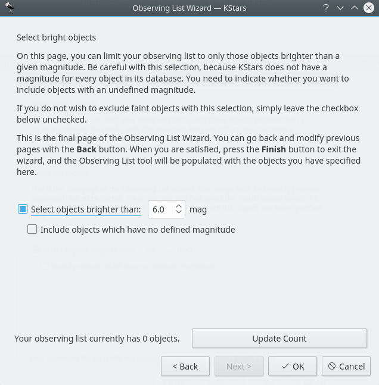
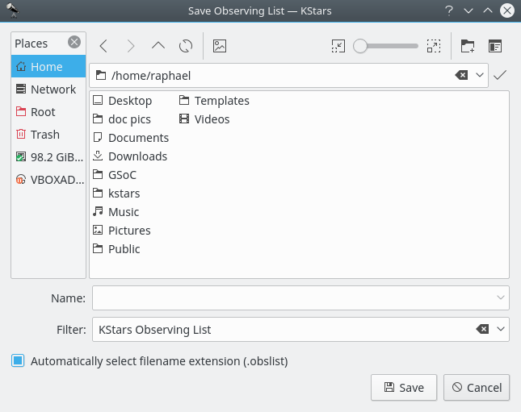
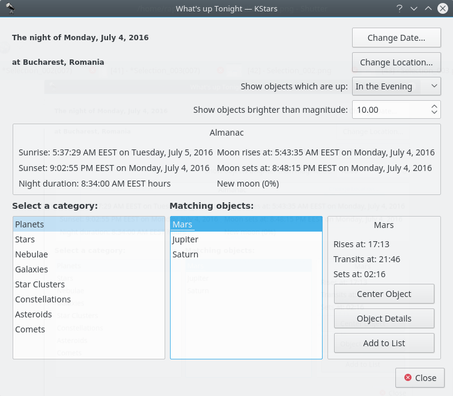

Observation Planner
Kristian Ivanov
Since KDE SC 4.4, Prakash Mohan's GSoC work has been released in KStars. KStars now has an awesome observation planner to plan your observation sessions. The execute session option allows you to log information about objects as you observe them. Alternately, you may also write a short log in the session planner itself. We wish you a lot of fun planning your observations with KStars!
You can even add some pictures to the objects. The image list is a Google image search list. To add image to an object just press Find Image button on the right and then find an image that you like. If you do not have an Internet connection you can open an image from your hard drive. Note that images that will be used are going to be cropped to 600x600 pixels.
The first way of doing this is by pressing Ctrl+2 or Ctrl+L to open the Observation List, then press the Add Object button.

The Download all Images button does a search for the SDSS images and displays the DSS image if the requested RA/Dec is out of the SDSS footprint.

This is an SDSS image of a galaxy

This is an DSS image of the same galaxy
The Delete all Images button does the opposite. It deletes all downloaded images.

The image for the galaxy is now deleted
You can add more objects by pressing the Find Object button. It will open the Find Object tool which provides two accurate methods for sorting out the items, depending on what criteria you want to use. You can filter the list by objects type: Any, Stars, Solar System, Clusters (Globular and Open), Nebulae (Gaseous and Planetary), Galaxies, Comets, Asteroids, Constellations, Supernovae or Satellites. You can also filter the objects list by name. Enter the name of desired object in the Filter by name text box.
Inside Observation Planner window you can see the “Altitude vs Time” widget (AltvsTime), which shows you how the altitude of a selected object varies over time.
Below the AltvsTime widget, there is a text box in that you can add observing notes for current sky object.
Note that the Wish List is not the Session Plan. In the Wish List you can add objects that you wish to observe at some point. From there you can add them to the Session Plan.
You can see the pop-up window that comes after right-clicking on an object.

Add objects to Session Plan window
Here is the second way of adding objects in your Observation Plan, using the Observing List Wizard. You just need to press the fourth button on the top-left corner of the Observation Planner window.
Despite looking differently this way is basically the same as the first one. Although that it could be a bit more detailed. Here you can see the same categories of objects.


You can choose where these objects to be on the sky. There are four options available for you: All over the sky (which is the default option), by constellation and in a region (rectangular or circular).

You can choose the date for the observation and the place you are going to observe from.

You can choose the treshold of magnitude for the objects to be shown. In astronomy, absolute magnitude (also known as absolute visual magnitude when measured in the standard V photometric band) measures a celestial object's intrinsic brightness.

You can save your observation plan. And it will save it with a .obslist extension.

You can also access the WUT (What's up tonight), which could be of a great assistance to you. It can give you ideas what to observe on a date, time and place that you specify using the configuration buttons int the top-right corner of the What's up tonight window.

This is how the Execution Session Window look. It can be opened by pressing Ctrl+2. In it you can also see some information about the selected object and you are able to add observing notes.

First Execute Session window
By pressing the Next Page button you will access the second page of Session Plan. Here you are able to see information not about your object, but about your equipment.

Second Execute Session window
Pressing the Next Target button will cause the Execute Session to open the first window about the next object.